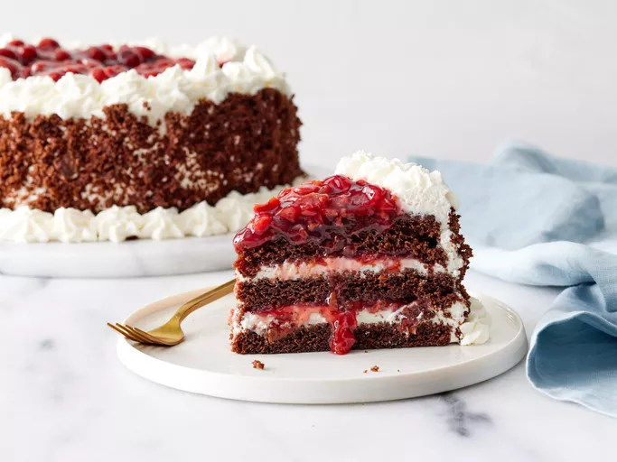

Home
black Forest cake recipe

This is a delicious recipe for a classic Black Forest cake, a rich chocolate cake layered with cherries and
whipped cream.
ingridients
- 2 cups all-purpose flour
- 1 3/4 cups granulated sugar
- 3/4 cup unsweetened cocoa powder
- 1 1/2 teaspoons baking powder
- 1 1/2 teaspoons baking soda
- 1 teaspoon salt
- 2 large eggs
- 1 cup whole milk
- 1/2 cup vegetable oil
- 2 teaspoons vanilla extract
- 1 cup boiling water
- 1 jar (24 oz) Morello cherries, drained and juice reserved
- Preheat your oven to 350°F (175°C). Grease and flour two 9-inch round cake pans.
- In a large bowl, combine the flour, sugar, cocoa powder, baking powder, baking soda, and salt.
- Add the eggs, milk, oil, and vanilla extract. Beat on medium speed for 2 minutes.
- Stir in the boiling water until well combined. The batter will be thin.
- Pour the batter evenly into the prepared pans.
- Bake for 30-35 minutes or until a toothpick inserted in the center comes out clean.
- Cool in the pans for 10 minutes, then remove from pans to cool completely on wire racks.
- Once cooled, slice each cake in half horizontally to create four layers.
- Place one layer on a serving plate and moisten with some reserved cherry juice.
- Add a layer of whipped cream and some cherries. Repeat with remaining layers.
- Top with whipped cream and decorate with chocolate shavings and cherries.
- Chill in the refrigerator for at least 1 hour before serving.